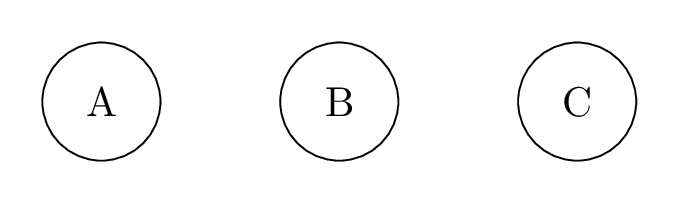
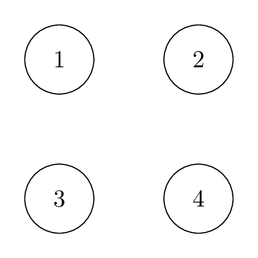
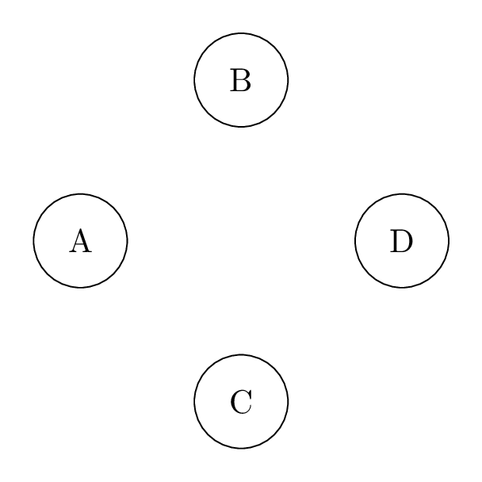
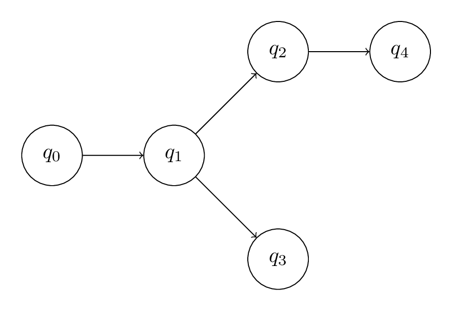
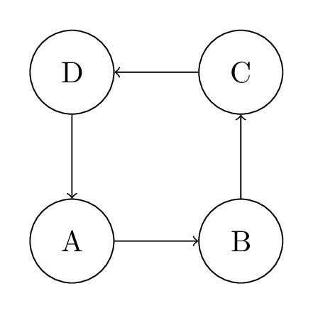

Each page shows two renderings of the same TikZ diagram using relative positioning
(right=of, below=of, above right=of, etc.).
One is compiled from LaTeX/TikZ. The other is our JavaScript library.
Can you tell which is which?




